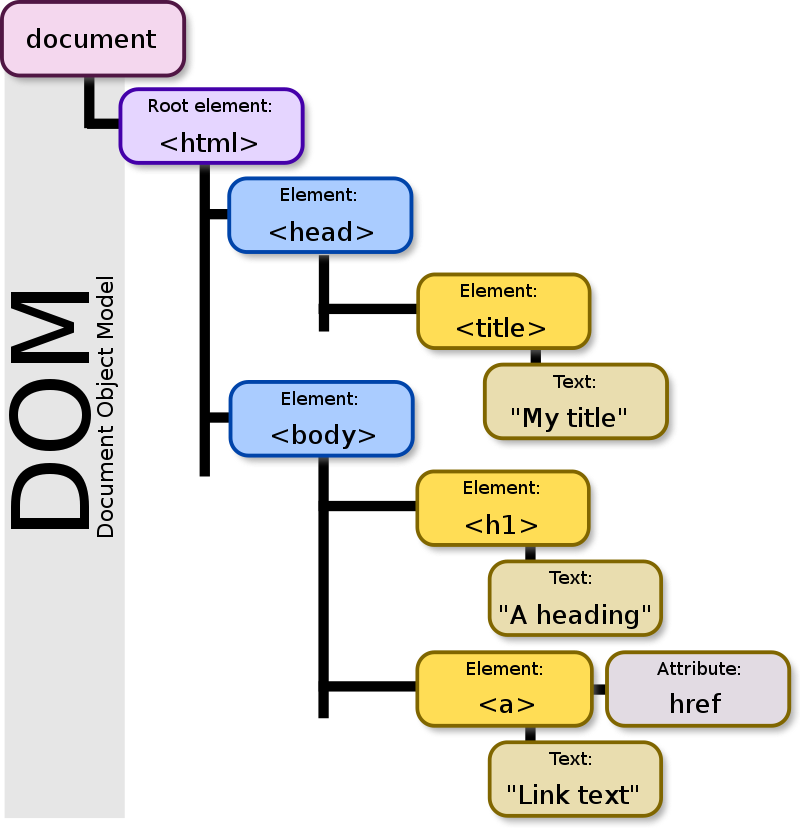

Document Object Model (DOM) signifie « modèle d'objets de document ».
Modèle
Un modèle sert à représenter quelque chose, comme le plan d'une ville. Le DOM représente le document qui se trouve dans le navigateur.
Objet
En programmation, un objet est un conteneur qui comporte des propriétés et des méthodes – qui sont des variables et des actions concernant ce qu'il représente2. Les objets du DOM peuvent représenter une fenêtre, un document, une phrase, un style…1
Document
Le DOM concerne un document, tel qu'une page web affichée dans un navigateur2. Une page web commence par une balise !DOCTYPE suivi de la balise dans laquelle se trouve le reste du document2. Le DOM représente le document affiché par une structure en arbre, comportant des nœuds (branches et feuilles)
